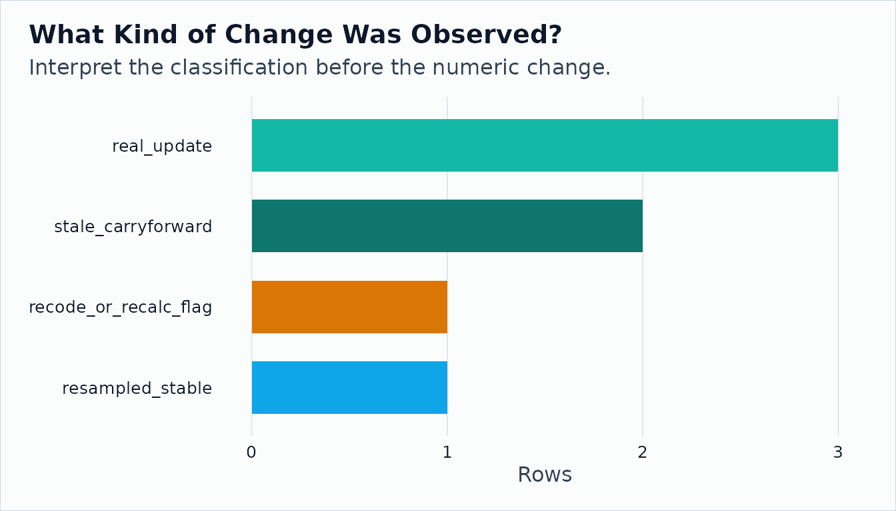

onet2r helps you move from occupation search to
analysis-ready O*NET tables, archived O*NET releases, and BLS OEWS wage
and employment context. Current O*NET Web Services calls require a free
API key from the O*NET developer
portal. Store it in .Renviron as
ONET_API_KEY=your-api-key-here so scripts do not contain
secrets.
The live Web Services examples are opt-in for package builds because
CRAN and CI should not depend on an external API. Everything else in
this article uses local files through actual onet2r
functions, so you can follow along on a plane with no signal and strong
opinions about occupations.
tibble::tibble(
setting = c("ONET_API_KEY configured", "live vignette API calls enabled"),
value = c(has_onet_key, run_live)
) |>
onet_kable()| setting | value |
|---|---|
| ONET_API_KEY configured | FALSE |
| live vignette API calls enabled | FALSE |
Search the Current O*NET API
When live calls are enabled, the first step is usually
onet_search(), followed by a detail endpoint such as
onet_skills() or onet_abilities().
if (run_live) {
onet_search("software developer", start = 1, end = 5) |>
onet_kable()
} else {
tibble::tibble(
live_api_example = "skipped",
reason = "Set ONET_API_KEY and ONET2R_RUN_LIVE_VIGNETTES=true to run onet_search()."
) |>
onet_kable()
}| live_api_example | reason |
|---|---|
| skipped | Set ONET_API_KEY and ONET2R_RUN_LIVE_VIGNETTES=true to run onet_search(). |
if (run_live) {
onet_skills("15-1252.00", start = 1, end = 5) |>
onet_kable()
} else {
tibble::tibble(
live_api_example = "skipped",
reason = "Set ONET_API_KEY and ONET2R_RUN_LIVE_VIGNETTES=true to run onet_skills()."
) |>
onet_kable()
}| live_api_example | reason |
|---|---|
| skipped | Set ONET_API_KEY and ONET2R_RUN_LIVE_VIGNETTES=true to run onet_skills(). |
Read an Archived O*NET Table
The Web Services API serves the current release. Historical work uses
the downloadable archive tables. onet_archive_read()
normalizes those archive files into tibbles with stable columns.
abilities <- onet_archive_read(
"30.3",
"Abilities",
path = archive_303,
release_date = "2026-05-01"
)
abilities |>
select(
release_version,
onet_soc_code,
soc_code,
element_id,
element_name,
data_value,
source_date,
domain_source
) |>
head(8) |>
onet_kable()| release_version | onet_soc_code | soc_code | element_id | element_name | data_value | source_date | domain_source |
|---|---|---|---|---|---|---|---|
| 30.3 | 15-1252.00 | 15-1252 | 1.A.1.a.1 | Oral Comprehension | 4.35 | 2025-07-01 | Analyst |
| 30.3 | 15-1252.00 | 15-1252 | 1.A.1.b.1 | Problem Sensitivity | 4.50 | 2024-07-01 | Analyst |
| 30.3 | 29-1141.00 | 29-1141 | 1.A.1.a.1 | Oral Comprehension | 4.71 | 2025-08-01 | Incumbent |
| 30.3 | 29-1141.00 | 29-1141 | 1.A.1.b.1 | Problem Sensitivity | 4.90 | 2024-08-01 | Incumbent |
| 30.3 | 11-1011.00 | 11-1011 | 1.A.1.a.1 | Oral Comprehension | 4.50 | 2025-07-01 | Incumbent |
| 30.3 | 11-1011.00 | 11-1011 | 1.A.1.b.1 | Problem Sensitivity | 4.22 | 2024-07-01 | Analyst |
| 30.3 | 41-1011.00 | 41-1011 | 1.A.1.a.1 | Oral Comprehension | 4.15 | 2025-06-01 | Analyst |
Add Labor-Market Context
BLS OEWS estimates add employment and wage scale to O*NET occupation rows. The modern weighting path creates an explicit reference-SOC weight panel.
oews <- onet_oews_national(2024, path = sample_oews)
weights <- onet_weight_panel_oews(oews, year = 2024)
weights |>
onet_kable()| reference_soc_code | year | employment | weight_share | source | source_taxonomy | reference_taxonomy |
|---|---|---|---|---|---|---|
| 11-1011 | 2024 | 211230 | 0.040 | OEWS | 2018 SOC | 2018 SOC |
| 15-1252 | 2024 | 1847900 | 0.353 | OEWS | 2018 SOC | 2018 SOC |
| 29-1141 | 2024 | 3175400 | 0.607 | OEWS | 2018 SOC | 2018 SOC |
To answer a concrete question, take one ability, treat the O*NET values as the user-supplied occupation score, and aggregate with OEWS employment.
oral_scores <- abilities |>
filter(element_id == "1.A.1.a.1") |>
transmute(onet_soc_code, measure_score = data_value)
oral_aggregate <- onet_measure_aggregate(
oral_scores,
weights,
measure_id = "oral_comprehension_fixture"
)
oral_aggregate |>
select(-coverage, -provenance) |>
onet_kable()| measure_id | aggregate | total_employment | covered_employment | employment_coverage_share | n_occupations | n_reference_soc |
|---|---|---|---|---|---|---|
| oral_comprehension_fixture | 4.574 | 5234530 | 5234530 | 1 | 4 | 4 |
onet_provenance(oral_aggregate) |>
onet_kable()| measure_id | weight_source | weight_year | source_taxonomy | reference_taxonomy | bridge_used | crosswalk_path |
|---|---|---|---|---|---|---|
| oral_comprehension_fixture | OEWS | 2024 | 2018 SOC | 2018 SOC | FALSE | 2018 SOC -> 2018 SOC |
Compare Two Archive Releases
For historical analysis, build a panel, reconcile adjacent releases, and inspect comparability flags before interpreting changes.
panel <- onet_panel(
"Abilities",
versions = c("30.2", "30.3"),
scale = "IM",
archives = c(`30.2` = archive_302, `30.3` = archive_303),
release_dates = c(`30.2` = "2026-02-01", `30.3` = "2026-05-01")
)
changes <- onet_panel_reconcile(
panel,
bridge = onet_crosswalk_bridge("2019", "2019")
)
changes |>
select(
to_soc_code,
element_name,
from_value,
to_value,
value_change,
change_type,
safely_comparable
) |>
arrange(desc(abs(value_change))) |>
head(8) |>
onet_kable()| to_soc_code | element_name | from_value | to_value | value_change | change_type | safely_comparable |
|---|---|---|---|---|---|---|
| 29-1141 | Problem Sensitivity | 4.60 | 4.90 | 0.30 | recode_or_recalc_flag | FALSE |
| 15-1252 | Oral Comprehension | 4.12 | 4.35 | 0.23 | real_update | TRUE |
| 41-1011 | Oral Comprehension | 4.00 | 4.15 | 0.15 | real_update | TRUE |
| 11-1011 | Oral Comprehension | 4.38 | 4.50 | 0.12 | real_update | FALSE |
| 15-1252 | Problem Sensitivity | 4.50 | 4.50 | 0.00 | stale_carryforward | TRUE |
| 29-1141 | Oral Comprehension | 4.71 | 4.71 | 0.00 | resampled_stable | TRUE |
| 11-1011 | Problem Sensitivity | 4.22 | 4.22 | 0.00 | stale_carryforward | TRUE |
plot_data <- changes |>
count(change_type, name = "rows") |>
arrange(desc(rows))
ggplot2::ggplot(plot_data, ggplot2::aes(
x = stats::reorder(change_type, rows),
y = rows,
fill = change_type
)) +
ggplot2::geom_col(width = 0.65, show.legend = FALSE) +
ggplot2::coord_flip() +
onet2r_discrete_fill() +
ggplot2::labs(
title = "What Kind of Change Was Observed?",
subtitle = "Interpret the classification before the numeric change.",
x = NULL,
y = "Rows"
) +
onet2r_theme()
Next Steps
- Read
vignette("longitudinal-onet-background", package = "onet2r")before interpreting cross-release changes. - Read
vignette("longitudinal-archives", package = "onet2r")to assemble and reconcile archive panels. - Read
vignette("oews-wage-context", package = "onet2r")to choose and apply employment weights. - Read
vignette("stress-testing-exposure-measure", package = "onet2r")to stress test a user-supplied measure.